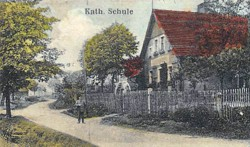
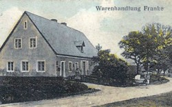
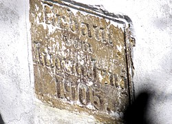
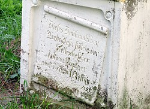
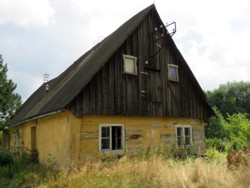
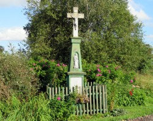
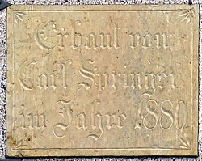
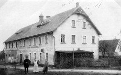

Lipienica wed³ug Adreßbuch Lindenau - numery domów
dodano: 07-03-2017
Na stronie "Lipienica wed³ug Adreßbuch Lindenau - mieszkañcy" zastanawia³em siê nad mieszkañcami Lipienicy, natomiast tutaj spróbujê podzieliæ siê moimi przemyœleniami nad numeracj¹ domów w Lipienicy..
Po pierwsze mo¿na spróbowaæ na postawie danych z trzech wydañ "Adreßbuch der Stadt und des Kreises Landeshut" ustaliæ, czy w latach 1911-1938 numeracja domów by³a sta³a czy te¿ mo¿e by³a zmieniana. Gdyby w miêdzyczasie dokonano zmiany numeracji to ma³o prawdopodobne jest, aby z jakiegoœ powodu równie¿ mieszkañcy danego numeru przeprowadzali siê do innego budynku. Skoro wiêc pod numerem "1" mieszka³ Grallert Paul w roku 1911, 1925 i 1938, to zapewne jest to ca³y czas ten sam budynek. Identycznie wygl¹da sytuacja z budynkami o numerach 8a, 12, 17, 20, 21, 24, 25, 30, 33, 35, 37, 43, 46, 47, 55, 62a, 63 - dok³adnie to samo imiê i nazwisko pod trzema datami. Sama ci¹g³oœæ nazwiska pod tym samym adresem zachowana jest pod numerami 6, 8, 14, 26, 28, 31, 32, 42, 56, 58 - wystêpuje tu zapewne dziedziczenie gospodarstwa po ojcu przez syna. Uprawnione wydaje siê wiêc za³o¿enie, ¿e numery budynków w Lipienicy zawarte we wszystkich trzech wydaniach "Adreßbuch der Stadt und des Kreises Landeshut" s¹ sta³e i odpowiadaj¹ tym samym budynkom.
Teraz mo¿na zastanowiæ siê, czy ta przedwojenna numeracja zosta³a zachowana równie¿ po wojnie. O ile zmienione zosta³y niemieckojêzyczne nazwy miejscowoœci (Lindenau -> Lipowo -> Lipienica) czy te¿ niemieckie nazwy ulic w miastach, to numeracja domów nie musia³a byæ zmieniana. Poniewa¿ ma³o prawdopodobne wydaje siê, aby by³y jakiekolwiek powody do zmiany istniej¹cej numeracji, tote¿ mo¿na za³o¿yæ, ¿e numeracja nie by³a zmieniona. Jednak czy takie za³o¿enie jest s³uszne?
| numer | opis | foto |
| 24 vel 36 |
Budynek o wspó³czesnym numerze "24" to dawna szko³a. "S³ownik Geografii Turystycznej Sudetów tom 8" wzmiankuje o nim: "nr 24 – mieszkalny, murowany z oko³o 1920 roku". Jednak pod numerem "24" znajdujemy w "Adreßbuch der Stadt und des Kreises Landeshut 1911" dom zamieszka³y ju¿ przez gospodarza "Höptner August, Kleingärtner" a w kolejnych latach prawdopodobnie jego syna: "Höptner Berthold, Kleingärtner / Landwirt". Na szko³ê mo¿na wiêc typowaæ budynek o numerze "36": nie jest on wymieniany w "Adreßbuch 1911" natomiast w "Adreßbuch 1925" znajdziemy wpis "Hönig Heinrich, Lehrer, 36" a w "Adreßbuch 1938" zapisano "Hönig Heinrich, Lehrer, (Schule) 36". (niem. Lehrer = nauczyciel, Schule = szko³a). W roku 1925 Hönig Heinrich wspomniany jest równie¿ jako przewodnicz¹cy zarz¹du szko³y (niem. Schulvorstand Vorsitzender) oraz nauczyciel szko³y katolickiej (Katolische Schule Lehrer). W "Adreßbuch 1911" wspomniany jest nauczyciel "Czieslik Karl, Lehrer, 41", opisany równie¿ jako "Katholische Schule Lehrer Czieslik Karl", ale dotyczy to okresu przez wybudowaniem budynku szko³y w ok. 1920 roku. W 1925 roku znajdziemy równie¿ drugiego nauczyciela: "Taatsch Hermann, Lehrer i. R., 68", jest to emerytowany nauczyciel i byæ mo¿e uczy³ w innej miejscowoœci.
Nale¿y uznaæ za niemal pewne, ¿e wspó³czesny budynek "24" mia³ przed wojn¹ numer "36". [dodano 08-03-2017] potwierdzenie powy¿szej teorii, jakoby szko³a przed wojn¹ mia³a numer "36", znalaz³em na stronie http://www.ak-landeshut.de/?page_id=4340, gdzie wyciêto fragment pocztówki opisanej na stronie "Pocztówki z Lipienicy - Lindenau" z wizerunkiem szko³y a ilustracjê tê podpisano: Haus Nr. 36 - Die katholische Schule. |
 |
| 27 vel 41 |
Na jednej z przedwojennych pocztówek, wspomnianej na stronie "Pocztówki z Lipienicy - Lindenau" i datowanej na rok 1937, znajduje siê budynek opisany jako "Warenhandlung Franke" (niem. handel towarami Franke"). W "Adreßbuch 1925" znajdziemy wpis "Franke Alois, Handelsmann, 41" a w "Adreßbuch 1938" znajdziemy wpis "Franke Alois, Handelsmann und Postagentur, 41". Widoczny na fotografii budynek "Warenhandlung Franke" to wspó³czesny budynek nr 27. Warto te¿ zauwa¿yæ, ¿e we wszystkich trzech wydaniach "Adreßbuch" nie ma budynku o numerze 27.
Tutaj równie¿ mo¿na uznaæ za niemal pewne, ¿e wspó³czesny budynek "27" mia³ przed wojn¹ numer "41". [dodano 08-03-2017] potwierdzenie powy¿szej historii o budynku "36 vel 41" znalaz³em na stronie http://www.ak-landeshut.de/?page_id=4340, gdzie wyciêto fragment pocztówki opisanej na stronie "Pocztówki z Lipienicy - Lindenau" z wizerunkiem sklepu a ilustracjê tê podpisano: Haus Nr. 41 - Warenhandlung Alois Franke. In diesem Haus befand sich auch die Postagentur. (pol. Dom numer 41 - sklep Aloisa Franke. W tym budynku by³a równie¿ agencja pocztowa). |
 |
| 23 vel 34 |
Na szczytowej œcianie wspó³czesnego budynku "23" znajduje siê kamienna tablica z wykutym napisem Erbaut von August Jung 1905. W "Adreßbuch 1911" znajduje siê wpis "Jung August, Restgutsbes., 34". Jak widaæ zaledwie szeœæ lat po dacie uwidocznionej na tablicy Jung August mieszka³ w budynku numer 34. By³a to jedyna osoba o nazwisku Jung we wszystkich trzech wydaniach "Adreßbuch". Wspó³czesny budynek "23" s¹siaduje z budynkiem "24", tak wiêc jeœli, jak wy¿ej wykaza³em, budynek szko³y przed wojn¹ mia³ numer"36" to s¹siadowa³by niemal bezpoœrednio opisywanym tu budynkiem "34".
W mojej ocenie istnieje du¿e prawdopodobieñstwo, ¿e budynek "23" mia³ przed wojn¹ numer "34". |
 |
| 14 vel 18 |
W bezpoœrednim s¹siedztwie drzwi wejœciowych do budynku o dzisiejszym numerze "14" znajduje siê kapliczka z niemieckojêzycznymi napisami na postumencie. Zachowana jest równie¿ informacja o fundatorze krzy¿a. Choæ widaæ imiê i nazwisko fundatora "Johann Höptner", to ca³oœæ napisu nie jest wspó³czeœnie do koñca czytelna. Napis ten zosta³ jednak odczytany ju¿ wczeœniej i mo¿na go znaleŸæ w ksi¹¿ce "Ma³a architektura sakralna Kotliny Kamiennogórskiej": "Dieses Denkmahl der Liebe Jesu stiftete der Stellenbesitzer Johann Höptner und siesen Ehefrau Anna geborene Reus 1898 - Ten pomnik zafundowa³ w³aœciciel zajazdu i jego ¿ona Anna z d. Reus w 1898 r." Wprawdzie pod numerem "24" mieszka³ gospodarz o nazwisku Höptner, jednak mia³ inne imiê. W wydanym zaledwie 13 lat po ufundowaniu kapliczki "Adreßbuch 1911" znajduje siê wpis "Höptner Johann, Kleingärtner, 18" i jest to jedyny "Höptner Johann" we wszystkich wydaniach "Adreßbuch". Warto te¿ zauwa¿yæ, ¿e wyraz "Stellenbesitzer" nale¿a³oby przet³umaczyæ jako "w³aœciciel gospodarstwa", gdy¿ waœciciel zajazdu to raczej "Gasthausbesitzer", tak wiêc zawód i status spo³eczny mo¿na uznaæ za zgodne. Mo¿na te¿ za³o¿yæ, ¿e kapliczka ta nie by³a przenoszona a gospodarz nie fundowa³by kapliczki przed domem s¹siada.
Nale¿y uznaæ, ¿e kapliczka ta sta³a przed budynkiem o przedwojennym numerze "18" a dzisiejszym "14". |
 |
| 61 vel ?? |
Na samym koñcu zabudowañ Lipienicy, po lewej stronie drogi jad¹c do Lubawki, mijamy bodaj¿e najstarszy budynek w wiosce, dom numer "61". "S³ownik Geografii Turystycznej Sudetów tom 8" wspomina o nim: "nr 61 – mieszkalny, drewniany, z 3. æw, XIV wieku". Jest to chyba jedyny drewniany dom w wiosce i rzeczywiœcie wygl¹da na bardzo stary. Dlaczego piszê w tym miejscu o tym domku? Skoro zosta³ on zbudowany w XIX wieku, to ktoœ zapewne musia³ w nim mieszkaæ w latach kolejnych wzniowieñ "Adreßbuch" - 1911, 1925 i 1938. Poniewa¿ numeru "61" nie znajdziemy w ¿adnym z nich, to albo ten dom by³ wówczas niezamieszka³y (w co w¹tpiê), albo przed wojn¹ mia³ inny numer. Spoœród przedwojennych budynków istniej¹cych wspó³czeœnie w trzech wydaniach "Adreßbuch" nie znajdziemy dwóch budynków: wspomnianego tu "61" oraz opisanego ju¿ powy¿ej "27".
Bardzo prawdopodobne jest, ¿e przed wojn¹ budynek "61" mia³ inny numer, choæ nie wiadomo jaki. |
 |
| 37 vel ?? |
Wje¿d¿aj¹c do Lipienicy od strony Krzeszowa po lewej stronie zobaczymy dom o numerze "37", jest to pierwszy przedwojenny budynek istniej¹cy wspó³czeœnie. Moglibyœmy tutaj skrêciæ w nieutwardzon¹ drogê prowadz¹c¹ przez pola do Jawiszowa. Po lewej stronie owej polnej drogi, a kilka metrów od drogi asfaltowej, zobaczymy kapliczkê. Za kapliczk¹ s¹ krzaki a w ich miejscu przed wojn¹ sta³y dwa budynki, dzisiaj zosta³o po nich tylko zaroœniête rumowisko. Sama kapliczka opisana jest na stronie 193 w ksi¹¿ce "Ma³a architektura sakralna Kotliny Kamiennogórskiej" jednak najbardziej w tym miejscu interesuj¹cy jest wspomniany tam napis na lewym boku: "Errichtet zur Ehre Gottes von Familie Heinzel 1896 - Ufundowany na Bo¿¹ chwa³ê przez rodzinê Heinzel w 1896 roku". Niestety nie ma imienia fundatora a nazwisko "Heinzel" wystêpuje w "Adreßbuch 1911" pod numerami 5, 13 i 64, w "Adreßbuch 1925" pod numerem 57 a w "Adreßbuch 1938" pod numerami 19, 57 i 66. Oczywiœcie mo¿na siê ograniczyæ tutaj tylko do "Adreßbuch 1911", edycji wydanej 15 lat po ufundowaniu kapliczki, jednak te¿ nie bêdziemy mieli jednoznacznego dopasowania.
Tutaj mo¿emy jedynie stwierdziæ, ¿e w bezpoœrednim s¹siedztwie dzisiejszego budynku "37" prawdopodobnie znajdowa³ siê budynek o przedwojennym numerze "5", "13" lub "64". Warto jednak zauwa¿yæ, ¿e wszystkie te przedwojenne numery nie s¹ "s¹siednie" do dzisiejszego numeru "37", co mo¿e poœrednio sugerowaæ, ¿e numer ten by³ inny. |
 |
| ?? | Na samym koñcu wioski, pomiêdzy mieszkalnymi domami o numerach "2" i "3", znajduje siê budynek gospodarczy z kamienn¹ tablic¹ na œcianie szczytowej od strony ulicy. Na tablicy tej mo¿emy przeczytaæ: Erbaut von Carl Springer im Jahre 1880. W sumie przeczytanie z ulicy owego napisu nieuzbrojonym okiem by³oby problematyczne, jednak aparat fotograficzny z zoomem optycznym powy¿ej 60x okaza³ siê tutaj przydatny, co widaæ na zdjêciu. Jednak "Carl Springer" nie jest obecny w ksi¹¿kach adresowych, a jedyny Springer to wystêpuj¹cy w "Adreßbuch 1925" i mieszkaj¹cy pod numerem 64 "Springer Gustav, Kleingärtner". Tak wiêc ta tablica, choæ bardzo ³adna, nie dostarcza jakiejkolwiek istotnej informacji odnoœnie numeracji numerów w Lipienicy.
Tutaj mo¿emy stwierdziæ, ¿e pod numerem "64" mieszka³ "Gustav Springer" i nosi³ on takie samo nazwisko jak niejaki "Carl Springer", który zbudowa³ budynek na koñcu wsi. Oczywiœcie taka informacja niczego do tematu nie wnosi. |
 |
| 59 vel 8 |
[dodano 08-03-2017] Na bardzo ciekawe zdjêcie natrafi³em na stronie http://www.ak-landeshut.de/?page_id=4340, gdzie znajdziemy zdjêcie dzisiejszego budynku "59" opisane w nastêpuj¹cy sposób: Gerichtskretscham, Bauer Taube, Anna Günther, Pächterin des Gerichtskretscham bis 1934, und Olga Fröbrich (von links) (pol. Karczma s¹dowa, gospodarz Taube, Anna Günther, dzier¿awca karczmy do roku 1934, i Olga Fröbrich po lewej). Na œcianie budynku widoczny jest napis "Gasthof Gerichtskretscham." Olga Fröbrich nie wystêpuje w ¿adnym wydaniu "Adreßbuch", natomiast dzier¿awcê karczmy znajdziemy w "Adreßbuch 1925", gdzie widnieje wpis: "Günther Anna, Gastwirtin, 8". Pod tym samym numerem znajdziemy równie¿ gospodarza Taube, bêdzie to albo "Taube Franz", Rentier w 1925 a Scholtiseibesitzer w roku 1925 lub "Taube Karl", Scholtiseibesitzer w 1925 roku oraz Bauer w roku 1938.
Z fotografii oraz opisu wynika, ¿e budynek o dzisiejszym numerze "59" mia³ przed wojn¹ numer "8". |
 |

{kind=link}
{kind=link}
{kind=link}
{kind=link}
{kind=link}
{kind=link}
{kind=link}
{kind=link}